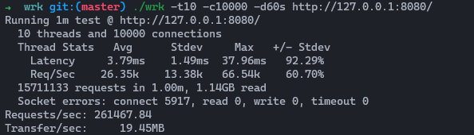
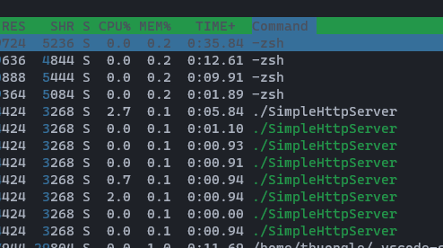

Features and Limitations
- Can handle at least 10k connections at the same time
- Can serve more than 100k request per sec
- Does no support for Multipart data
- Support OS: Linux
- Does not use any 3rd lib, just C++ standard and Linux sysem API
Architecture Overview
- 1 main thread for starting the server and for user interact
- 1 Listener thread to accept incoming from clients and then propagate the request to the workers
- N worker threads (by default, it is 5): those threads take the requests from the Listener and process HTTP
requests, and then send the responses back to the client.
- A component called Storage, this component will read files from the local dir, cache them, and serve it to
workers when needed
- We also have a thread called Storage_Watcher for schedule update files content on time for Storage - every 5s
- The purpose of Storage and Storage_Watcher is to reduce the CPU process when dealing with local files. We will
provide the content as quick as possible and we also the content is updated
- Some utility functions parse HTTP requests and responses

Benchmark
I using this tool for checking the perf: https://github.com/wg/wrk
- OS: Ubuntu 20.04 LTS
- CPU: Intel(R) Core(TM) i7-8700 CPU @ 3.20GHz
- Memory: 8GB
Testing with the resource in RAM (local variable)
- URL: http://127.0.0.1:8080/
- Time: 60s

Testing with the resource in local files (which are cached in Storage)
- URL: http://127.0.0.1:8080/index.html
- Time: 60s

CPU when IDLE

CPU when Loading

Future feature and Enhancement
- Add service watcher: we need a watcher server in order to recover and make the server run almost 99.99% of the
time
- Dynamic configuration with config files
- Storage_Watcher right now will automatically update the content of the files every 5s, this wait will slow down
the system if there are too many files to cache.
We need a new way that is more efficient, eg: inotify or
some 3rd lib
- Use a service for replacing Storage. Storage right now needs a mutex to work in multithread, we can improve it
by using some 3rd party SW, like Redis for caching file contents
- Add Logger: Logger is a critical feature for a SW, especially for a web server.
- Support Multipart data
- Bandwidth throttling or API rate limit